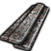
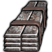
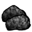
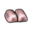
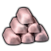

中世纪Vile本地补丁×1原料级·中世纪·焦炭Coke
不可塑形建造/打造时选不到这种材质;仅作配方原料(被 6 条配方消耗)
 生效·CoalOreCore_SK
生效·CoalOreCore_SKThings/Item/Resource/CoalOre Single (250,200,200)被6条配方消耗
护甲 —/—/— 利钝 —/— 价值 3 质量 0.20 Bulk 0.20
stuff —
HSK Metallurgical
产自 Coke Coal(金属提炼厂) ; coke coal (x20)(陶瓷窑炉/Metallurgy III - Medieval)
源 Vile's Metallurgy
Items_resources.xml
中世纪按消耗它的配方研究档本地原料级·中世纪·炉渣RK_Met_Slag
不可塑形建造/打造时选不到这种材质;仅作配方原料(被 3 条配方消耗)
生效·SlagACore_SK生效·SlagBCore_SK生效·SlagCCore_SK
Things/Item/Chunk/Slag Random 被3条配方消耗
护甲 —/—/— 利钝 —/— 价值 0.1 质量 6 Bulk —
stuff —
HSK —
产自 Make iron bloom from ore(冶铁炉) ; Make pig iron (x100)(高炉) ; Forge wrought iron from pig iron (x30)(锻造厂)
源 HSK工业科研大修
Items_RK_Metallurgy.xml
电力工业·前期Vile原料级·电力工业·渗碳钢BlisterSteel
不可塑形建造/打造时选不到这种材质;仅作配方原料(被 1 条配方消耗)
 生效·AVile's Metallurgy
生效·AVile's Metallurgy
生效·BVile's Metallurgy
生效·CVile's MetallurgyThings/Item/BSBillet StackCount 被1条配方消耗
护甲 —/—/— 利钝 —/— 价值 0.7 质量 0.35 Bulk 0.35
stuff —
HSK Metallurgical
产自 Make blister steel (x40)(渗碳炉)
源 Vile's Metallurgy
Alloys_Intermediate.xml
电力工业·前期Vile原料级·电力工业·块炼铁IronBloom
不可塑形建造/打造时选不到这种材质;仅作配方原料(被 1 条配方消耗)
 生效·AVile's Metallurgy
生效·AVile's Metallurgy
生效·BVile's Metallurgy生效·CVile's MetallurgyThings/Item/Bloom StackCount 被1条配方消耗
护甲 —/—/— 利钝 —/— 价值 1 质量 2 Bulk 1
stuff —
HSK Metallurgical
产自 Make iron bloom from ore(冶铁炉)
源 Vile's Metallurgy
Alloys_Intermediate.xml
电力工业·前期Vile本地补丁×1原料级·电力工业·生铁PigIron
不可塑形建造/打造时选不到这种材质;仅作配方原料(被 11 条配方消耗)
 生效·AVile's Metallurgy
生效·AVile's Metallurgy
生效·BVile's Metallurgy
生效·CVile's MetallurgyThings/Item/PigIron StackCount 被11条配方消耗
护甲 —/—/— 利钝 —/— 价值 0.5 质量 0.35 Bulk 0.35
stuff —
HSK Metallurgical, CastBar
产自 Pig iron from titanomagnetite (x30)(高炉) ; resmelt slag for residual iron(高炉/Metallurgy III - Medieval) ; Make pig iron (x100)(高炉)
源 Vile's Metallurgy
Alloys_Intermediate.xml